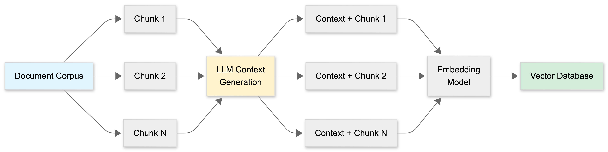
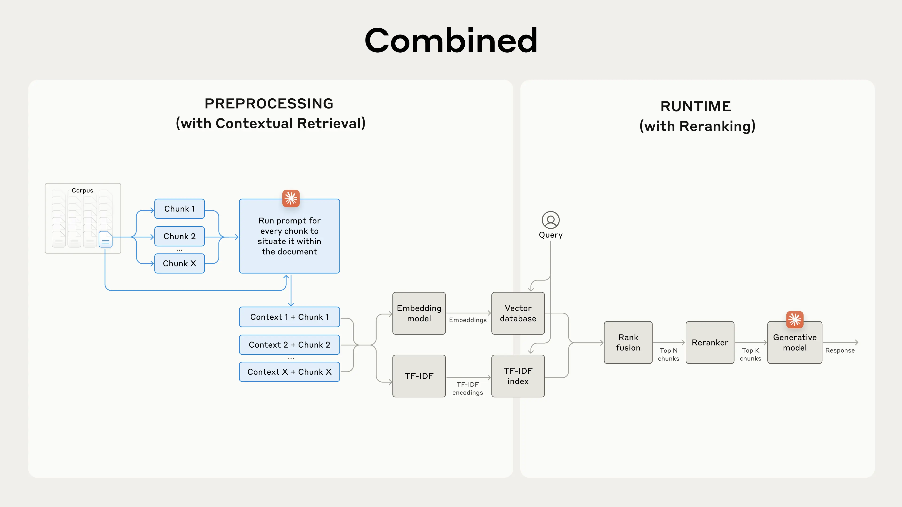

A comprehensive guide to optimizing Retrieval-Augmented Generation (RAG) systems for production use.
Core Techniques
🪓 Chunking Strategy
Getting chunk size right is critical. Too small = loss of context. Too large = noisy retrieval.
Key Principles
- Chunk based on logical units (sentences, paragraphs, sections) rather than arbitrary character counts
- Always add overlap between chunks (10-20%) to avoid losing important context at boundaries
- Consider token-based chunking using your model's tokenizer—but this locks you into that tokenizer
- Small chunks = more diverse results but higher computational overhead (more embeddings to store and search)
- Recursive chunking works well: start with large units, break down progressively until you fit context limits
Chunking Options
- Word-based chunking
- Sentence-based chunking
- Paragraph-based chunking
- Section-based chunking
- Token-based chunking (using model's tokenizer)
Important Considerations
- Chunk size should not exceed max context length of the generator or embedding model
- Small chunks provide more diverse information (can fit more chunks in context)
- However, small chunks can cause loss of information
- Small chunks increase computational overhead (need to generate and store more embedding vectors)
- If you use token-based chunking with a specific tokenizer, changing models later requires re-indexing all documents
🎯 Query Rewriting
User queries are often incomplete, especially in multi-turn conversations.
The Problem
Example conversation:
User: When was the last time John Doe bought something from us?
AI: John bought a Fruity Fedora on January 3, 2030.
User: How about Emily Doe?The last query will fail retrieval—it lacks context. It should be rewritten to "When was the last time Emily Doe bought something from us?"
Solution
- Use LLMs to rewrite queries as self-contained questions
- Each query should contain all necessary context, even in multi-turn conversations
- The rewritten query should be semantically complete and understandable without prior context
Important Warning
- Be careful of hallucinations when using AI models for query rewriting
- Validate that rewrites make logical sense
- Consider implementing checks to ensure the rewritten query preserves the user's intent
🔁 Reranking
The two-stage retrieval paradigm: cheap retrieval → expensive reranking.
Why Reranking?
Especially useful when you want to:
- Reduce the number of retrieved documents
- Reduce the number of input tokens to your LLM
- Improve the precision of your final result set
Common Approach: Hybrid Retrieval System
- First stage: Fetch candidates with a cheap retriever
- Use BM25 + vector search to cast a wide net
- Term-based retrieval catches exact keyword matches
- Embedding-based retrieval handles semantic similarity
- Second stage: Rerank with a better model
- Use cross-encoder models for precision
- More computationally expensive but much more accurate
- Only applied to the smaller candidate set
Time-Based Reranking
Documents can also be reranked based on time, giving higher weight to more recent items.
This is critical for time-sensitive applications:
- Email systems
- Stock market data
- News aggregation
- Real-time monitoring systems
Benefits
- Reduces input tokens to your LLM (significant cost savings!)
- Improves relevance of final result set
- Allows you to use cheaper retrievers for initial candidate generation
📍 Contextual Retrieval
This one's a game-changer. Chunks often lack context needed for accurate retrieval.
The Problem
A chunk about "Q3 revenue increased 15%" is useless without knowing:
- Which company?
- Which year?
- Which product line or division?
Anthropic's Solution
- For each chunk, use an LLM to generate a brief context (50-100 tokens) explaining the chunk's relationship to the overall document
- Prepend this context to the chunk before embedding
- Now the chunk becomes self-contained and retrievable
Example Transformation
Before: "Q3 revenue increased 15%"
After:
"This chunk is from Acme Corp's 2024 annual report, discussing the cloud services division. Q3 revenue increased 15%"
Anthropic's Prompt Template
<document>
{{WHOLE_DOCUMENT}}
</document>
Here is the chunk we want to situate within the whole document:
<chunk>
{{CHUNK_CONTENT}}
</chunk>
Please give a short succinct context to situate this chunk within
the overall document for the purposes of improving search retrieval.
Answer only with the succinct context and nothing else.Additional Augmentation Strategies
You can also augment chunks with:
- Metadata: tags, keywords, timestamps
- Product information: descriptions and reviews
- Media context: image/video captions and titles
- Expected user questions: what users might ask about this content
- Special identifiers: error codes, product IDs, reference numbers
- Chunk-specific terms: technical jargon or domain-specific terminology
The Process
Document Corpus → Split into chunks →
Generate context for each chunk →
Prepend context to chunk →
Embed augmented chunks →
Store in vector databaseBenefits
- Dramatically improves retrieval precision
- Makes chunks self-contained and understandable
- Reduces false positives from semantic search
- Particularly effective for technical documents, reports, and structured data

Combining Contextual Retrieval with Reranking
Contextual retrieval can be combined with reranking to further improve retrieval precision. After initial candidates are retrieved with contextual retrieval, they are reranked with a better model to improve precision.

Advanced Techniques
🔍 Hybrid Search
What it is
Combining dense (vector-based) retrieval with sparse (keyword-based) retrieval. This is arguably the most impactful optimization missing from basic RAG implementations.
How it works
- Dense retrieval (Vector search): Uses embedding models to find semantically similar
content
- Great for: conceptual queries, synonyms, paraphrasing
- Weakness: misses exact keyword matches
- Sparse retrieval (BM25/keyword search): Traditional keyword matching algorithms
- Great for: exact terms, product codes, names, technical jargon
- Weakness: misses semantic similarity
- Hybrid approach: Combine both methods and merge results
- Each method scores documents independently
- Final ranking uses weighted combination of both scores
- Typically: 70% vector + 30% BM25, but tune for your use case
Step-by-step process
- Chunk the knowledge base: Break down documents into smaller chunks (typically a few hundred tokens each)
- Create dual encodings: Generate both TF-IDF encodings and semantic embeddings for each chunk
- BM25 retrieval: Use BM25 algorithm to find top chunks based on exact keyword matches
- Vector retrieval: Use embeddings to find top chunks based on semantic similarity
- Rank fusion: Combine and deduplicate results from both methods using rank fusion techniques (e.g., Reciprocal Rank Fusion)
- Context augmentation: Add the top-K chunks to the prompt to generate the final response
Why it's critical
Almost every production RAG system uses hybrid search because:
- Covers both semantic and lexical matching
- Handles edge cases better (product SKUs, error codes, exact names)
- More robust to different query types
- Empirically shows 15-30% improvement in retrieval accuracy
Implementation
# Pseudocode
vector_results = vector_search(query_embedding, top_k=20)
bm25_results = bm25_search(query_text, top_k=20)
# Merge and rerank
combined_results = merge_with_weights(
vector_results,
bm25_results,
vector_weight=0.7,
bm25_weight=0.3
)🏷️ Metadata Filtering
What it is
Pre-filtering documents by metadata attributes before performing vector search to narrow the search space.
How it works
Instead of searching your entire vector database, first filter by metadata:
- Date ranges (e.g., "only documents from 2024")
- Source (e.g., "only from engineering documentation")
- Category (e.g., "only policy documents")
- Author, department, tags, etc.
Then perform vector search only on the filtered subset.
Example
Query: "What's our refund policy for enterprise customers?"
Without metadata filtering:
- Search all 100,000 documents
- Get mixed results (consumer policies, internal docs, marketing material)
With metadata filtering:
- Filter:
category="policy" AND customer_type="enterprise" - Search only 500 relevant documents
- Much higher precision
Benefits
- Dramatically reduces search space
- Improves retrieval speed
- Increases precision by eliminating irrelevant documents
- Lower computational costs
When to use
- Multi-tenant systems (filter by customer/organization)
- Time-sensitive data (filter by date)
- Multi-domain corpora (filter by domain/category)
- Access control requirements (filter by permissions)
🌳 Parent-Child / Hierarchical Retrieval
What it is
Embed small chunks for precision, but return larger parent chunks to the LLM for better context.
The Problem
- Small chunks = precise retrieval but insufficient context for generation
- Large chunks = good context but imprecise retrieval (noisy results)
The Solution
- Create a hierarchy: large parent chunks and smaller child chunks
- Embed and index the small child chunks for retrieval
- When a child chunk is retrieved, return the parent chunk to the LLM
Example Structure
Document: "Product Manual"
├── Parent Chunk 1: "Installation Guide" (2000 tokens)
│ ├── Child Chunk 1.1: "Prerequisites" (200 tokens) ← embed this
│ ├── Child Chunk 1.2: "Step-by-step instructions" (200 tokens) ← embed this
│ └── Child Chunk 1.3: "Troubleshooting" (200 tokens) ← embed this
└── Parent Chunk 2: "Configuration Guide" (2000 tokens)
├── Child Chunk 2.1: "Basic settings" (200 tokens) ← embed this
└── Child Chunk 2.2: "Advanced settings" (200 tokens) ← embed thisRetrieval Flow
- User query: "How do I fix installation errors?"
- Vector search finds Child Chunk 1.3: "Troubleshooting" (high precision)
- System returns Parent Chunk 1: "Installation Guide" to the LLM (full context)
- LLM has both the relevant section AND surrounding context
Benefits
- Best of both worlds: precise retrieval + rich context
- LLM gets proper context for better generation
- Reduces hallucination from insufficient context
- Maintains semantic coherence
🎭 HyDE (Hypothetical Document Embeddings)
What it is
Generate a hypothetical answer first, then embed that for retrieval instead of the original query. This bridges the query-document semantic gap.
The Problem
Questions and answers use different vocabulary and structure:
- Query: "How do I fix CUDA out of memory errors?"
- Documentation: "To resolve OOM issues, reduce batch size, enable gradient accumulation, use mixed precision training..."
These have different semantic representations despite being related.
How HyDE works
- User submits query: "How do I fix CUDA out of memory errors?"
- Ask LLM to generate a hypothetical answer (even if it hallucinates):
"To fix CUDA OOM errors, you should reduce batch size, use gradient accumulation, enable mixed precision training with torch.cuda.amp, clear cache with torch.cuda.empty_cache()..." - Embed this hypothetical answer
- Search using the hypothetical answer's embedding
- The real documentation is semantically closer to this "answer" than to the original question
Why it works
- Answers and documents exist in similar semantic space
- Questions exist in a different semantic space
- By converting query → hypothetical answer, we bridge the gap
- The hypothetical answer doesn't need to be factually correct—it just needs to be semantically similar to real answers
When to use
- Technical documentation queries
- How-to questions
- Queries where the semantic gap between question and answer is large
- Domains with specialized vocabulary
Caution
- Adds extra LLM call (latency + cost)
- Works best with high-quality instruction-following models
- May not help for factual lookup queries ("What is the capital of France?")
🔀 Multi-Query Retrieval
What it is
Generate multiple variations of the user's query and retrieve documents for each variation, then merge the results.
How it works
- Original query: "Best practices for API security"
- Generate variations:
- "How to secure REST APIs"
- "API authentication and authorization methods"
- "Preventing API vulnerabilities"
- "API security design patterns"
- Retrieve documents for each variation
- Merge and deduplicate results
- Optionally rerank the merged set
Difference from Query Rewriting
- Query Rewriting: 1 query → 1 better query
- Multi-Query: 1 query → multiple query variations → merged results
Benefits
- Catches documents that a single query phrasing might miss
- More comprehensive coverage
- Reduces dependency on exact query phrasing
- Handles ambiguous queries better
Implementation Strategies
- Use LLM to generate variations
- Use pre-defined templates for common query types
- Generate variations based on synonyms and related terms
Trade-offs
- More retrieval calls = higher latency
- More documents to process and rerank
- Diminishing returns after 3-5 query variations
✅ Self-RAG / Corrective RAG
What it is
The system evaluates whether retrieved documents are actually relevant to the query and can take corrective actions (re-retrieve, try different strategy, or fall back gracefully).
The Problem
Traditional RAG blindly trusts retrieved documents:
- Retrieved docs might be irrelevant
- Retrieved docs might be outdated
- Retrieved docs might contradict each other
- No docs might be available
How Self-RAG works
1. Retrieve documents
2. LLM evaluates each document:
- Is this relevant to the query?
- Does this support or contradict other documents?
- Is this information sufficient to answer?
3. Decision branches:
a. All docs relevant → Proceed to generate answer
b. Partially relevant → Retrieve more documents
c. Not relevant → Try different retrieval strategy or web search
d. No docs available → Answer from parametric knowledge or admit uncertaintyExample Flow
Query: "Latest features in Python 3.12"
Step 1: Initial retrieval returns docs about Python 3.10
Step 2: Self-RAG detects version mismatch
"Query asks for 3.12, but retrieved docs are about 3.10"
Step 3: Corrective action: Trigger web search for current information
Step 4: Verify new results match query requirements
Step 5: Generate answer with appropriate sourcesCorrective RAG Variant
Focuses specifically on correction strategies:
- If retrieval quality is low → reformulate query and retry
- If retrieved docs are contradictory → retrieve more for disambiguation
- If no relevant docs found → expand search scope or use external sources
Implementation Considerations
- Add relevance scoring step after retrieval
- Define thresholds for "good enough" relevance
- Implement fallback strategies (web search, admit uncertainty)
- Track retrieval quality metrics
Benefits
- Prevents hallucination from irrelevant context
- More robust and reliable RAG system
- Handles edge cases gracefully
- Improves user trust through transparency
When to implement
- Production systems where accuracy is critical
- Domains where information changes frequently
- Multi-source retrieval systems
- Applications where wrong answers have consequences
🕸️ Graph RAG
What it is
Use knowledge graphs to capture entity relationships that vector search misses. Instead of treating documents as isolated chunks, build a graph of interconnected entities and relationships.
The Problem with Vector Search
Vector search finds semantically similar text, but it misses explicit relationships:
- "John worked on Project X" (in document A)
- "Project X failed in 2023" (in document B)
- Vector search might miss the connection between John and the project failure
How Graph RAG works
- Entity Extraction: Extract entities (people, places, organizations, concepts) from documents
- Relationship Mapping: Identify relationships between entities
- Graph Construction: Build knowledge graph with entities as nodes and relationships as edges
- Hybrid Retrieval:
- Use vector search for semantic similarity
- Use graph traversal for relationship queries
- Combine both for comprehensive retrieval
Example Graph Structure
[John] --works_on--> [Project X] --failed_in--> [2023]
[Project X] --belongs_to--> [Cloud Division]
[Cloud Division] --part_of--> [Acme Corp]Query Examples
"What projects did John work on that failed?"
- Graph traversal: John → works_on → Project X → failed_in → 2023
- Returns: "Project X failed in 2023, John worked on it"
Benefits
- Captures "who did what, when, where" relationships
- Handles multi-hop reasoning (John → Project → Division → Company)
- Answers relationship queries that vector search can't
- Provides explainable retrieval paths
Use Cases
- Research papers (author → paper → cites → paper)
- Corporate knowledge (employee → project → department → company)
- Legal documents (case → cites → statute → applies_to → situation)
- Medical records (patient → condition → treatment → outcome)
Implementation
- Use graph databases (Neo4j, Amazon Neptune)
- Extract entities with NER models
- Extract relationships with relation extraction models
- Combine graph traversal with vector search results
Challenges
- More complex to implement and maintain
- Requires entity extraction and relationship mapping
- Graph quality depends on extraction accuracy
- Higher computational overhead
When to use
- Complex domains with rich entity relationships
- When "how things connect" matters as much as "what's similar"
- Investigative or analytical use cases
- Knowledge management systems
🤖 Agentic RAG
What it is
Treat RAG as a multi-step decision-making process where an LLM agent decides how to retrieve information, rather than using a single fixed retrieval pipeline.
The Problem
Different queries need different retrieval strategies:
- "What were our Q3 sales?" → SQL database query
- "Explain our refund policy" → Vector search on policy documents
- "Latest news about competitor X" → Web search
- "Show me code examples for authentication" → Code search
One-size-fits-all retrieval doesn't work for diverse queries.
How Agentic RAG works
- Query Analysis: Agent analyzes the user's query to understand intent
- Strategy Selection: Agent decides which tools/retrievers to use
- Multi-Step Retrieval: Agent can chain multiple retrievals
- Self-Evaluation: Agent evaluates if retrieved information is sufficient
- Adaptive Refinement: Agent can try different approaches if first attempt fails
Example Flow
Query: "Compare our Q3 revenue vs competitors in the cloud market"
Agent reasoning:
1. "Need internal Q3 revenue" → Query SQL database
2. "Need competitor revenue" → Web search
3. "Need cloud market context" → Vector search internal reports
4. Combine all three sources → Generate comparative analysisCommon Patterns
ReAct (Reasoning + Acting):
Thought: I need to find the user's order history
Action: query_database(user_id=123, table="orders")
Observation: Found 15 orders
Thought: User asked about recent orders, I should filter
Action: filter_orders(timeframe="last_30_days")
Observation: 3 orders in last 30 days
Thought: Now I can answer
Answer: You placed 3 orders in the last 30 days...Tool Selection:
- Classify query intent (factual, analytical, procedural, transactional)
- Route to appropriate tools:
- Factual → Vector search
- Analytical → SQL + Vector search
- Procedural → Documentation search
- Transactional → API calls
Implementation
Often built with frameworks like:
- LangGraph (state machines for multi-step retrieval)
- LangChain Agents
- Custom agent loops with tool calling
Benefits
- Handles complex, multi-faceted queries
- Adapts to query requirements dynamically
- Can combine multiple data sources intelligently
- More robust to diverse query types
Challenges
- Higher latency (multiple LLM calls)
- More complex to debug
- Potential for infinite loops or excessive tool use
- Requires careful prompt engineering for agent reasoning
When to use
- Complex applications with diverse data sources
- When queries require multi-step reasoning
- Enterprise systems with SQL, vector DB, web search, APIs
- Conversational interfaces that need context-aware retrieval
🎯 Fine-Tuning Embedding Models
What it is
Train domain-specific embedding models on your specialized corpus instead of using general-purpose embeddings.
The Problem
General-purpose embedding models (OpenAI, Cohere, etc.) are trained on broad internet data. They might not capture nuances in your specific domain:
- Medical terminology and relationships
- Legal language and precedents
- Corporate jargon and acronyms
- Technical documentation conventions
How it works
- Collect training data:
- Positive pairs: (query, relevant document)
- Negative pairs: (query, irrelevant document)
- Can generate synthetically using LLMs
- Fine-tune embedding model:
- Start with pre-trained model (e.g., sentence-transformers)
- Continue training on domain-specific pairs
- Optimize for your retrieval task
- Deploy fine-tuned model:
- Use for encoding both queries and documents
- Store embeddings in vector database
Benefits
- Significantly better retrieval accuracy in specialized domains
- Captures domain-specific semantic relationships
- Better handling of jargon and terminology
- Can optimize for your specific retrieval patterns
Trade-offs
- Expensive: requires labeled data and training resources
- Maintenance: need to retrain as domain evolves
- Deployment: need to host custom model
- May lose some general knowledge from base model
When to use
- Highly specialized domains (medical, legal, scientific)
- When retrieval accuracy is critical and worth the investment
- Large-scale systems where marginal improvements have big impact
- When you have sufficient training data (thousands of examples)
Data Generation Strategy
Use LLMs to generate synthetic training data:
For each document chunk:
1. Generate 3-5 queries that this chunk should answer
2. Generate 3-5 queries that this chunk should NOT answer
3. Use as positive and negative training pairsQuick Reference
Start Here (Highest ROI)
- Hybrid Search (dense + sparse retrieval)
- Contextual Retrieval (augment chunks with context)
- Reranking (two-stage retrieval)
Next Level
- Query Rewriting (handle multi-turn conversations)
- Metadata Filtering (narrow search space)
- Parent-Child Retrieval (precision + context)
Advanced (When Needed)
- HyDE (bridge query-document gap)
- Multi-Query Retrieval (comprehensive coverage)
- Self-RAG / Corrective RAG (robust production systems)
- Agentic RAG (complex multi-source queries)
- Graph RAG (relationship-heavy domains)
- Fine-tuned Embeddings (specialized domains)
Measuring Success
Always measure retrieval quality before optimizing generation:
Key Metrics
- Recall@K: What % of relevant documents are in top K results?
- Precision@K: What % of top K results are actually relevant?
- MRR (Mean Reciprocal Rank): Average 1/rank of first relevant result
- NDCG (Normalized Discounted Cumulative Gain): Quality of ranking
Remember: Bad inputs = bad outputs, no matter how good your LLM is.
Resources
- Anthropic's Contextual Retrieval: https://www.anthropic.com/engineering/contextual-retrieval
- Chip Huyen's AI Engineering: Comprehensive coverage of RAG systems
- Microsoft's Graph RAG Paper: Deep dive into knowledge graph integration
- HyDE Paper: "Precise Zero-Shot Dense Retrieval without Relevance Labels"
Citation
If you found this guide helpful and would like to cite it:
Cited as:
Haseeb, Raja. (Feb 2026). "RAG Optimization Techniques". Personal Blog.
https://pytholic.github.io/posts/rag-optimization-techniques/
Or in BibTeX format:
@article{pytholic2026ragoptim,
title = "RAG Optimization Techniques",
author = "Haseeb, Raja",
journal = "pytholic.github.io",
year = "2026",
month = "Feb",
url = "https://pytholic.github.io/posts/rag-optimization-techniques/"
}